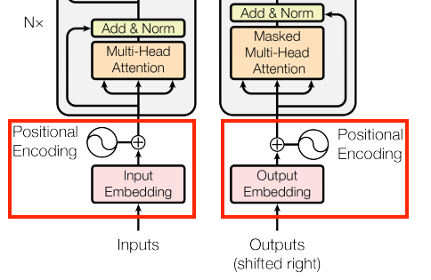
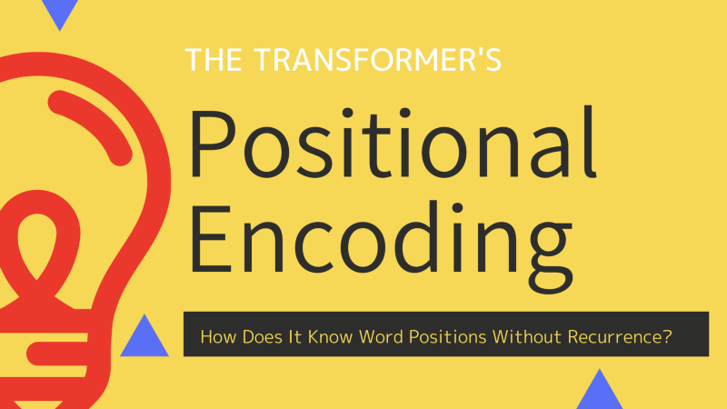
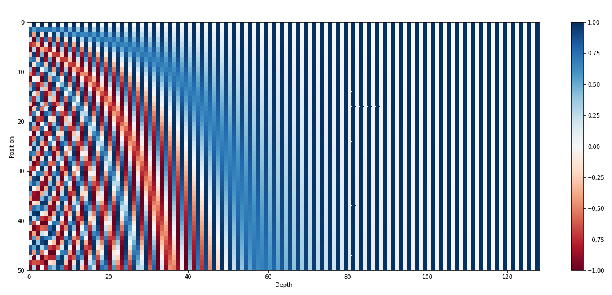
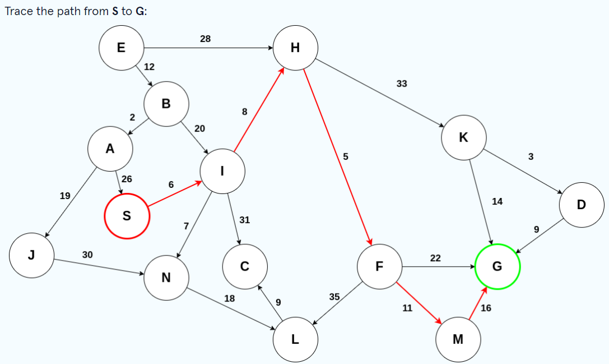
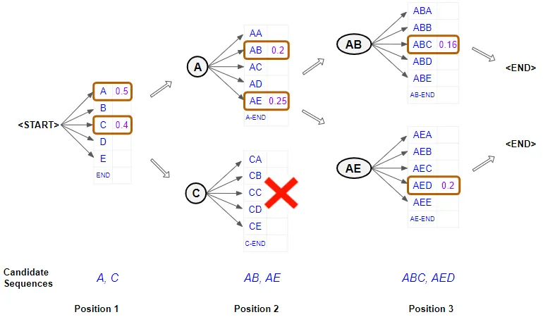
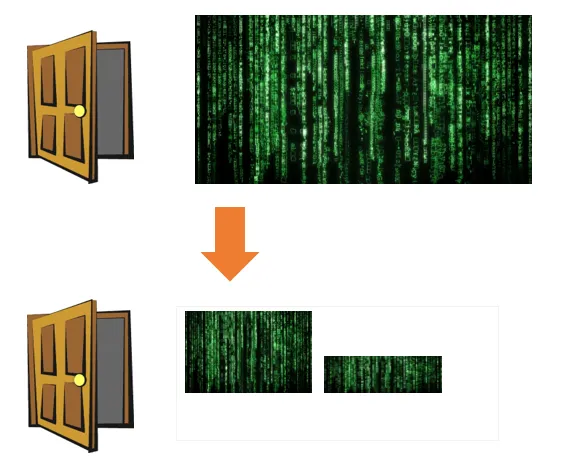

Reading list
Resources & references
A curated set of articles and explainers I return to — on transformers, positional encoding, beam search, and parameter-efficient fine-tuning.

Positional Encoding
Positional encoding provides a relative position for each token in a sequence. When reading a sentence, each word depends on the words around it; some words carry different meanings in different contexts, so a model should understand these variations and the words each relies on for context.

Transformer's Positional EncodingHow does it know word positions without recurrence?
In 2017, Vaswani et al. published "Attention Is All You Need" for NeurIPS, introducing the original transformer architecture for machine translation — performing better and faster than the RNN encoder–decoder models mainstream at the time. The big transformer model then achieved state-of-the-art performance on NLP tasks.

Transformer Architecture: The Positional EncodingUsing sinusoidal functions to inject the order of words
The transformer architecture was introduced as a novel pure attention-only sequence-to-sequence architecture by Vaswani et al. Its ability for parallelizable training and its general performance improvement made it a popular option among NLP (and recently CV) researchers.

BEAM Search
BEAM Search, a variant of breadth-first search, searches a weighted graph for an optimal path from a start node S to a goal node G. Unlike breadth-first search, at every level only the top β candidates are kept for further exploration — β being the beam width — since a path from S to G is likely to pass through the most promising nodes.

Foundations of NLP Explained Visually: Beam Search
Many NLP applications — machine translation, chatbots, text summarization, and language models — generate text as their output. Applications like image captioning and automatic speech recognition output text too, even if they aren't considered pure NLP tasks.
Unmasking BERT: The Key to Transformer Model Performance
At the moment, practice is far ahead of theory in the technological life cycle of deep learning for NLP. We use approaches like masking that seem to work, and we tweak the numbers and it works a little better or worse — yet we can't fully explain why. Some find this frustrating: if we can't explain it, how can we use it?

In-depth Understanding of LoRa and Finetuning an LLM using LoRa
With recent innovations in AI it has become easy to find solutions to many NLP problems. Fine-tuning becomes relevant only when you have questions about custom data the pretrained LLM hasn't seen and typical prompt-engineering techniques aren't giving the expected results.